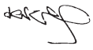

Audit Committee Report
As at 31 December 2017
We are pleased to report on the Committee’s activities and areas of focus for the year ended 31 December 2017.
1.1 Audit Committee terms of reference and internal audit charter
The Committee conducts its affairs in compliance with the Terms of Reference adopted and reviewed by the Board time to time in terms of best practices. The TOR is available on the Company’s website www.slt.lk.
1.2 Composition of Audit Committee
The Committee comprise of three NEDs of whom 2 are Independent Directors. The biographical details are set out on pages 84 to 86.
The composition of the Committee meets the requirements of the Listing Rules of CSE, and is as follows:
Ms Lai Choon Foong – ChairpersonMs Nilanthi Pieris
Mr A R Desapriya
Mr Chan Chee Beng resigned as the Chairman and member of the Committee with effect from 3 October 2017. Ms Chandra Ekanayake and Mr Rohan De Silva ceased to be members consequent to their resignation from the Board of SLT with effect from 1 August 2017 and 19 December 2017.
Ms Lai Choon Foong is a member of international and Malaysian professional accounting bodies. The Committee members have a good mix of skills, expertise and experience in commercial, telecommunications, financial and audit matters due to the current senior positions or previous positions in other organisations.
The Company Secretary functions as the Secretary of the Committee.
1.3 Activities of Audit Committee
The role and responsibilities of the Committee are set out in full in its written Terms of Reference.
The major activities undertaken by the Committee during the financial year are summarised below:
1.3.a Internal control and risk management
The Committee had reviewed the overall adequacy and effectiveness of the systems of internal control in the Group through the review of key internal and external audit findings reported by the Internal Auditors and External Auditor, and discussions with senior Management.
The Committee reviewed the status of risk management activities in the Group presented by the Management which included the risk profile, changes to the key risks and mitigation plans, to ensure that key risks were identified, managed and tracked.
1.3.b Financial reporting
The Committee reviewed the quarterly financial results and annual audited Financial Statements of the Group with the Management and discussed with the External Auditor, before recommending their approval by the Board of SLT who approves the release of the financial results to the CSE.
The Committee discussed with the Management to ensure that matters relating to financial reporting set out in its Terms of Reference, Listing requirements of the CSE, provisions of the Companies Act No. 7 of 2007 and Sri Lanka Accounting and Auditing Monitoring Board had been complied with.
1.3.c External audit
The Committee had assessed and was satisfied that the independence of the External Auditor has not been impaired by any event or service that gives rise to a conflict of interest; and had ensured that the appointment of the External Auditor complies with the Companies Act and any other related legislation.
The Committee reviewed the audit plan of the External Auditor including their scope of work, audit approach and proposed fees for their quarterly reviews of the financial results and statutory audit of the Financial Statements for the financial year.
The Committee also deliberated on the audit results, issues, recommendations and resolution of issues reported by the External Auditor together with them and the Management.
After reviewing the effectiveness of the External Auditors, the Committee recommends that Ernst & Young be reappointed as the Auditor of the Company for the financial year 2018 subject to the approval of the shareholders at the AGM.
1.3.d Group internal audit function
The Group has an independent Internal Audit function which reports directly to the Committee. The function provides assurance on the effectiveness of governance, internal control and risk management in the Group.
The Committee reviewed and approved the risk-based annual internal audit plan which included the use of external specialist assistance for special and technical audits, and assessed the performance of the Internal Audit function against the plan.
The Group Chief Internal Auditor (“GCIA”) presented the key audit or investigation findings and recommendations arising from the internal audits or investigations conducted to the Committee and ensured that timely corrective action was taken by the Management to address the issues.
1.4 Meetings of Committee
The Committee met on eight occasions during the financial year 2017 and their attendance at these meetings is shown in the Corporate Governance Report. The Chairman, Group Chief Executive Officer, Group Chief Internal Auditor and Chief Financial Officer attended all meetings by invitation. The External Auditor was requested to attend the meetings as and when required.
Key matters considered during the meetings held during the year are:
| Month of Meeting | Key Activities |
| February 2017 |
|
| April 2017 |
|
| April 2017 |
|
| May 2017 |
|
| May 2017 |
|
| August 2017 |
|
| October 2017 |
|
| November 2017 |
|
1.5 External Auditor’s fees
The fees paid to the External Auditor during the financial year 2017 are disclosed in Note 7 to the Financial Statements.
On behalf of the Audit Committee,

Ms Lai Choon Foong
Chairperson
Audit Committee
29th March 2018